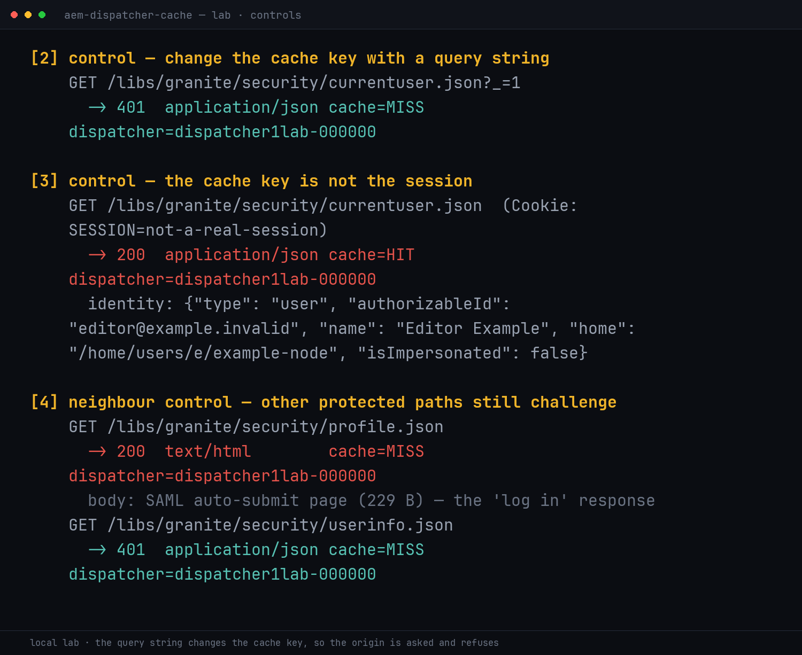
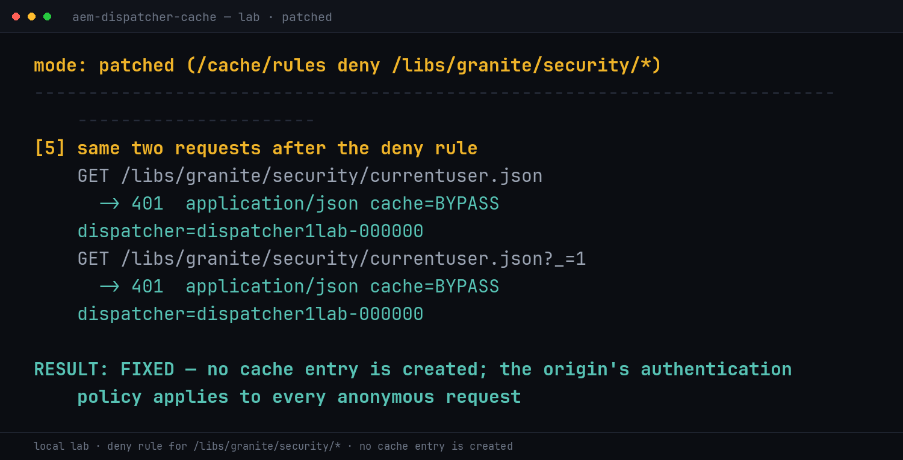
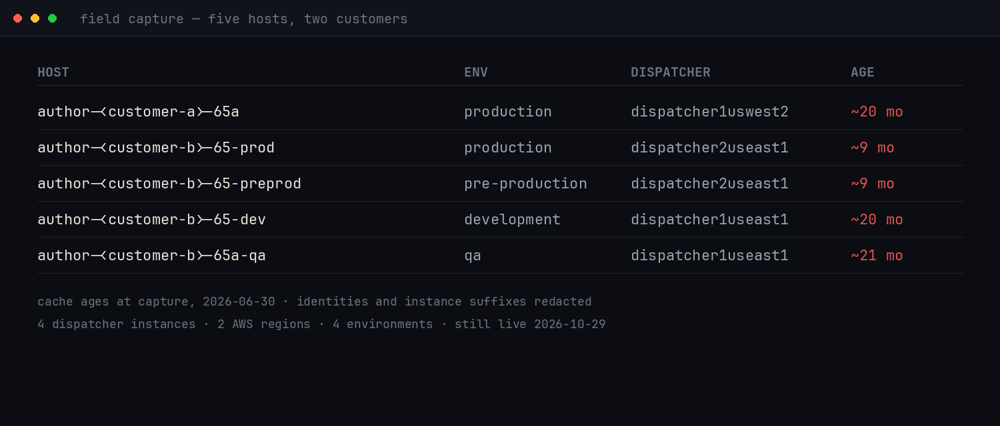

TL;DR
/libs/granite/security/currentuser.json is a per-session endpoint: it answers "who is asking?" by returning the identity bound to the caller's session. On Adobe Managed Services author tiers, that URL was cached by the Apache Dispatcher.
Result: an anonymous GET returned the identity of whoever last warmed the cache — login identifier, display name, and internal JCR home path. Every other protected path on the same hosts correctly redirected to SAML or answered 401.
Five hosts, two AMS customers, four distinct dispatcher instances, two AWS regions. The cached entries were between nine and twenty-one months old, and none of them had expired on their own.
And the boundary, stated up front: this is an identity disclosure, not a session theft. There are no cookies, tokens, or content in the response. That distinction is the entire difference between a 5.3 and a 9.8, and I am not going to pretend otherwise.
lab/reproduce.py from the repro repository — no customer system was contacted for this clip, and no real identity appears in it.PrologueA question with an answer it shouldn't have
There is a small class of URL that exists only to be asked by someone who is already logged in. AEM has one of the simplest: /libs/granite/security/currentuser.json. It is the server's answer to who am I?
Ask it as a stranger and the correct response is a challenge — a redirect into Okta SAML, or 401 from the default servlet. Ask it with a session and you get that session's identity back. The endpoint is not supposed to have an opinion about people who have not introduced themselves.
I was mapping Adobe Managed Services author tiers. Not brute-forcing them — enumerating hostnames from certificate transparency and asking each one a single, polite question. Most of them answered with a login page, which is the correct and deeply boring behaviour I was hoping for.
One answered with a name.
$ curl -sv https://author-<customer-a>-65a.adobecqms.net/libs/granite/security/currentuser.json \
-H "User-Agent: Mozilla/5.0" -H "Accept: application/json" -H "Cookie: "
< HTTP/1.1 200 OK
< X-Dispatcher: dispatcher1uswest2-<redacted>
< X-Vhost: author
< Last-Modified: Wed, 16 Oct 2024 15:34:28 GMT
< Cache-control: no-cache="set-cookie"
< Content-Type: application/json
{"type":"user","authorizableId":"<redacted-email>",
"name":"<redacted>","home":"/home/users/-/<redacted>",
"isImpersonated":false}No cookie was sent. No session existed. The server volunteered a colleague's identity, an internal user-node path, and the fact that the identity was not an impersonation.
The interesting part was not the leak. It was the timestamp: 16 Oct 2024. Whatever session produced that response had ended long before I arrived, and the answer had been sitting in a cache ever since, waiting for the next person to ask.
Chapter 1What an author tier is for
AEM is two products wearing one name. The publish tier faces the internet and serves pages. The author tier faces editors: it is the CMS back office, the asset pipeline, the workflow engine, and — importantly for this story — a user directory with personally identifying data in it.
Nobody should reach an author tier without authenticating. In the deployments I was looking at, that means Apache with mod_dispatcher in front of a Jetty/Tomcat origin, and an Okta SAML IdP in front of that. The Dispatcher does three jobs: it caches, it filters, and it is the only component that anonymous traffic is supposed to touch.
anonymous GET /libs/granite/security/currentuser.json
│
▼
┌──────────────┐ cache HIT, no auth check ┌─────────────────────┐
│ Dispatcher │ ───────────────────────────► │ cached response │
│ (Apache) │ │ from a session │
└──────────────┘ │ that ended in │
│ │ 2024 │
│ cache MISS (add ?_=1) └─────────────────────┘
▼
┌──────────────┐ no session
│ AEM author │ ───────────────────────────► 302 → Okta SAML
│ (origin) │ 401 → Basic
└──────────────┘That diagram is the whole vulnerability, and it also contains the diagnosis. The origin is behaving. The cache is not. Somewhere between "this response belongs to one authenticated user" and "this URL is cacheable for everyone", a rule was written that could not be true at the same time.
For context, AEM's own answer for an anonymous session is {"anonymous":"anonymous"} — I have seen it on other AEM installs. There is no ambiguity about what the endpoint is supposed to return when nobody is asking on their own behalf. The response I got named a real account.
Chapter 2One path out of five
Before believing a single endpoint, I checked its neighbours. If an author tier is simply open, everything answers. If one rule is wrong, exactly one thing answers and everything else keeps saying "log in".
| Path | Anonymous result | Correct? | Cached? |
|---|---|---|---|
/libs/granite/security/currentuser.json | 200 — user JSON, 258 B | no | yes |
/libs/granite/security/profile.json | 200 — Okta SAML auto-submit, 1 854 B | yes | no |
/libs/granite/security/userinfo.json | 401 — Basic auth challenge | yes | no |
/libs/cq/security/currentuser.json | 401 — Basic auth challenge | yes | no |
/content/dam/<site>/metadata.json | 401 — Basic auth challenge | yes | no |
Four of five are textbook. The SAML auto-submit page is the "you are not logged in, here is the door" response, and the 401s are the default servlet refusing to guess. Only the first one returns data, and it returns data that belongs to somebody.
This is the control that kills the laziest explanation. If the author tier were exposed by a missing authentication filter, profile.json would be readable too — and it is not. If the whole vhost were public, userinfo.json would answer — and it does not. The behaviour is path-specific, which points at a cache rule, because a cache rule is path-specific by nature.
That matrix is from the first host, where I ran the full set. On the other four I repeated the two checks that matter — the cached path and, where recorded, the query-string control — and got the same shape. I am not going to claim a five-path matrix I did not run on every host.
Chapter 3Proving the cache did it
"It returned a user object" is an observation. "A cache in front of a hardened origin returned a stale user object" is a claim, and claims need a mechanism test. The one that worked is almost embarrassingly simple: change the cache key.
# exact path — served from the dispatcher cache
$ curl -s -o /dev/null -w '%{http_code}\n' \
https://author-<customer-a>-65a.adobecqms.net/libs/granite/security/currentuser.json
200
# same path + any query string — cache miss, request reaches the origin
$ curl -s -o /dev/null -w '%{http_code}\n' \
'https://author-<customer-a>-65a.adobecqms.net/libs/granite/security/currentuser.json?_=1'
401
# on the second customer the miss redirects instead of challenging
$ curl -s -o /dev/null -w '%{http_code} → %{redirect_url}\n' \
'https://author-<customer-b>-65-prod.adobecqms.net/libs/granite/security/currentuser.json?_=1'
302 → https://<redacted>.okta.com/...Same URL. Same headers. Same client. One character of query string apart. With the query string, the request misses the cache, reaches AEM, and AEM does exactly what it is supposed to do: refuse. Without it, Apache answers from a file on disk.
Four more observations close the case:
X-Dispatcheris on the response. The body did not come from Tomcat. It came from the caching layer, identified by name and instance.Last-Modifiedis old and stable. October 2024 on one host, September 2025 on another. Repeated requests over days return byte-identical bodies with the same date.- Accept, cookies, and
Authorizationdo not vary the response. Sending an invalid bearer token, a junk cookie, orAccept: text/htmlall return the same cached JSON. The cache key is the path. Nothing about the caller is part of it. - Path aliases hit the same object. The clientlibs proxy form —
/etc.clientlibs/../libs/granite/security/currentuser.json— returns the identical body, which tells you the key is the normalised path, not the literal request line.

401; a bogus cookie changes nothing because the cookie is not in the key; the sibling paths in the same directory still challenge. Same three observations as the field, reproduced without touching a customer system.Cache-control: no-cache="set-cookie" is the AEM default for session-ish responses. It means: you may store this response, but do not replay its Set-Cookie header. It protects the cookie. It says nothing about the body — and the body is the identity. Whoever wrote that rule was thinking about the session token and forgot that the JSON is the session's answer.
One more detail that matters for severity: the cache had no observable expiry. AEM Dispatcher entries normally die on invalidation, not on time. These had survived nine to twenty-one months, through deployments, through user offboarding, through whatever else happened to those accounts. A cache entry that outlives the session that created it is a frozen identity.
Chapter 4One host is an accident
A single misconfigured vhost is a customer's problem. Five hosts across two unrelated customers, four dispatcher instances and two AWS regions is a template's problem — and a template is Adobe's.
| Host (redacted) | Env | Dispatcher | Cache age |
|---|---|---|---|
author-<customer-a>-65a | Production | dispatcher1uswest2 | ~20 months |
author-<customer-b>-65-prod | Production | dispatcher2useast1 | ~9 months |
author-<customer-b>-65-preprod | Pre-production | dispatcher2useast1 | ~9 months |
author-<customer-b>-65-dev | Development | dispatcher1useast1 | ~20 months |
author-<customer-b>-65a-qa | QA | dispatcher1useast1 | ~21 months |
Two things in that table are worth pausing on.
First, the environments. Production, pre-production, development, and QA all behave identically. That is the signature of a provisioning template rather than an operator mistake: four environments were built from the same rule set, and so were the two customers, in two regions, on four separate dispatcher instances.
Second, the identities overlap. The same person appears on both the production and QA hosts of the second customer, with two different JCR paths — because they are two different user nodes, in two different environments, each frozen at a different moment. If you wanted a map of who has author access and where, this misconfiguration hands you the first pin for free.
I did not go looking for more hosts after that. The question had been answered: it is systemic. Continuing to enumerate would have meant touching more customers' systems to prove something I already knew — and "I already knew it" is not a reason to keep going.
Chapter 5What an identity is worth
Here is where I have to be careful, because this is the exact point where a Medium gets inflated into a Critical by a researcher who cannot bear to leave a finding where it belongs.
What the response contains:
authorizableId— the login identifier. On one customer it is a corporate email address; on the other it is a short username.name— a real display name, frequently a person's full name.home— the internal JCR path of the user node, e.g./home/users/-/<opaque-id>.isImpersonated—false, in every sample.
What it does not contain: no session cookie, no bearer token, no password hash, no group membership, no permissions, no content, and no user list. You get one identity per host — whoever last authenticated through that dispatcher — and no ability to choose a different one.
| Capability | Status | Why |
|---|---|---|
| Read a real identity anonymously | proven | The whole finding |
| Enumerate other users | no | Cache holds one identity per node |
| Hijack a session | no | No token or cookie in the body |
| Reach content or the DAM | no | Auth gate intact on every other path |
| Escalate to admin | no | No roles or permissions exposed |
So what is it worth? Three things, in ascending order of usefulness to an attacker.
A confirmed login identifier. On AEM, authorizableId is what you type into the login form, and it is frequently the same string you type into the IdP. Knowing it turns "somebody at this company" into "this account exists, and here is its exact name" — which is the input a password spray needs and the thing a good login page will never confirm.
A business relationship. The first identity I saw was a shared licensing mailbox at a partner company, not an employee. Anonymous disclosure of that tells you which third party has editorial access to this CMS — useful for a spear-phish aimed at the partner rather than the customer, whose defensive posture you know nothing about.
An internal node path. /home/users/-/<id> is not a secret on its own, but it is the shape of the user tree, confirmed from outside. Small pieces of internal structure are what turn a generic exploit into a targeted one.
None of that is account takeover. All of it is reconnaissance that the organisation did not intend to publish — for twenty months, to anyone, with no authentication and no rate limit worth mentioning.
Chapter 6The honest score
The vector I would defend in review:
CVSS:3.1/AV:N/AC:L/PR:N/UI:N/S:U/C:L/I:N/A:N = 5.3 Medium- AV:N / AC:L / PR:N / UI:N — one unauthenticated GET, no timing, no interaction, no prerequisites. The low complexity is real; that is what makes the misconfiguration embarrassing rather than clever.
- C:L — one identity per host. Confidentiality of a name, a login identifier, and an internal path. Not credentials, not content.
- S:U — the attacker does not gain the victim's authority. They learn who the victim is.
I have seen this class reported as Critical, and I understand the temptation: the word "authenticated data served to anonymous users" sounds like a breach. It is not. The severity lives entirely in what the cached object is, and this one is a name tag.
profile.json payload with contact details, the identical misconfiguration would be account takeover and the score would be an 8 or a 9. The bug is the rule. The severity is the payload. Anyone reporting this class should measure the payload honestly rather than the rule's potential.
Chapter 7How the rule gets written
I never read these customers' dispatcher.any — that file is not reachable anonymously, and guessing at a config you cannot see is how write-ups lose credibility. What follows is a reconstruction that is consistent with every observed behaviour, and I am labelling it as such.
A Dispatcher config has a filter section (what may be requested at all) and a cache section (what may be stored). Author tiers usually deny everything and allow a small, boring set of paths. Somewhere in the cache rules, the user-contextual endpoint ended up on an allow list:
/cache {
/rules {
/0000 { /glob "*" /type "deny" }
/0062 { /glob "/libs/granite/security/currentuser.json" /type "allow" }
}
}On its own, "allow" only says the response is storable. The second half of the bug is that nothing keyed the entry to a session. Dispatcher has a mechanism for exactly this — /sessionmanagement, which folds a session identifier into the cache key so each user gets their own entry — and it is not in play here. Without it, the first authenticated response through a dispatcher node becomes the response for that URL, for everyone, until something invalidates it.
Why does that rule exist at all? My best guess, and it is only a guess: currentuser.json is called constantly by the author UI to decide what to render. It is a hot path. Somebody, at some point, treated "hot path" as "cache it" without noticing that the endpoint's entire purpose is to vary per caller. That is not carelessness unique to AEM — it is the generic failure mode of caching: the cache key has to include every input the response depends on, and here the input is who is asking.
The reason it survives for months is the same reason it is dangerous. Nothing in the system is watching for "this cached object should never have existed". The origin never sees the request, so it never logs an anomaly. The cache serves a valid file with a valid timestamp. Dashboards stay green. The only component that could notice is a person asking the right question.
Chapter 8The fix
Four steps, in the order I would do them.
1. Flush, then deny. Delete the cached entry, then make the rule impossible to reintroduce. A deny for /libs/granite/security/* in /cache/rules is the direct fix; these are per-session endpoints and none of them belong in a shared cache.
/cache {
/rules {
/0000 { /glob "*" /type "deny" }
/0001 { /glob "/libs/granite/security/*" /type "deny" }
# … only genuinely public, non-personal paths below
}
}
lab/reproduce.py in patched mode.2. If you must cache a session-aware path, key it by session. /sessionmanagement with the login token header is the documented mechanism. For an author tier the better answer is usually "don't cache it at all" — author traffic is low-volume and internal, and the cache buys little.
3. Audit the rest of the allow list with one question. For every path that may be cached: does the response change based on who is asking, or on any header other than the ones in the cache key? currentuser.json was the one that failed here, but it is rarely the only user-contextual endpoint in a CMS.
4. Fix it at the template. Two customers, four environments, four dispatchers and two regions all share this behaviour, which means the correction belongs in the AMS default rule set, not in five separate customer tickets. A per-customer fix leaves the next provisioned environment with the same default.
And a monitoring note for whoever owns these tiers: the useful detection is not "did someone request currentuser.json" — everyone does. It is "did a response for a per-session path get served without a session". That is a log line the dispatcher can emit, and almost nobody asks it for.
EpilogueReceipts
The artefacts are unglamorous by design. There is no exploit script, because there is no exploit — there is a URL and a curl.
| Artefact | What it establishes |
|---|---|
Five 200 responses | Anonymous identity disclosure, one per host, byte-stable across days |
| Cache-miss pair per host | ?_=1 → 401/302; the origin refuses when it is actually consulted |
| Neighbour matrix | Four other protected paths correctly challenged on the first host |
| Header set | X-Dispatcher, X-Vhost: author, Last-Modified from 2024–2025 |
| Fleet table | 2 customers, 4 dispatchers, 2 regions, 4 environments, 9–21 months stale |
| Reproducer + lab | Self-contained mock origin and dispatcher, vulnerable and patched; redacting field probe |

On method, because it matters when the targets are somebody else's production systems: the entire run was a single unauthenticated GET per host and per path, with no concurrency, no fuzzing, no authentication attempts, and no attempt to flush or poison anything. I did not try a password against any account I found. Finding a login identifier and then spraying it is how a Medium becomes an incident, and it is not necessary to prove the finding.
Timeline, so far: found in June 2026 while mapping AMS author tiers; reported to Adobe with the unredacted host list and responses. Still live when I last checked, on 29 October 2026 — same five paths, same five bodies, same Last-Modified dates. This page publishes the mechanism with identities and hostnames redacted, because "still serving the data" was true at publication time. If Adobe or the affected customers confirm remediation, I will publish the full values and update this note.
Two lessons, and then I will stop. First: an origin and its cache are two different security boundaries, and hardening one says nothing about the other. The AEM instances here were fine. The thing in front of them had been holding a stranger's name for twenty months. Second: the cache key is a security control. Every field a response depends on has to be in it, and "who is asking" is the easiest field in the world to forget.
The endpoint asked who I was. It answered with someone else.
Identities, hostnames, and internal paths are redacted here and in the public copy of this page. No customer data beyond the identity fields described was accessed, and no authentication was attempted. The reproduction — mock origin, mock dispatcher, vulnerable and patched configurations, plus the redacting field probe — is at github.com/shoo0lin/aem-dispatcher-cache-leak.